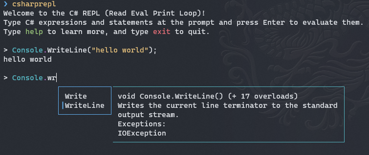
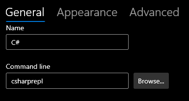
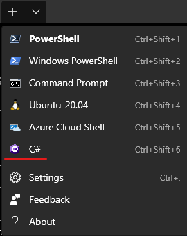

C# REPL in Windows Terminal
In this blogpost I will show you how to set up a C# REPL in Windows Terminal.
What is a C# REPL?
REPL stands for Read/Evaluate/Print loop. The user types in a command, the command gets evaluated, and the output is returned to the user. A C# REPL uses C# as the command language.
This is different from the traditional way of using C#. Traditionally the user would write a C# program, compile it, and run it. A REPL is interactive, you get instant feedback.
Many C# REPLs
There are quite a few C# REPLs out there.
- C# interactive : This is a windows in Visual Studio.
- csi.exe : this is the engine behind C# interactive. It can be run in a terminal but it's Windows only.
- dotnet-script : This allows you to run .csx files but it also contains a REPL. It does not have intellisense or syntax highlighting.
In this blogpost, I want to focus on CSharpRepl : it's a cross platform (.Net 5) C# REPL that supports syntax highlighting and intellisense.
CSharpRepl
CSharpRepl is installed as a global tool :
dotnet tool install -g csharprepl
Once installed all you have to do to invoke it is type csharrepl and you're good to go:

Integrating with Windows Terminal
In Windows Terminal, click CTRL+, to bring up the settings tab. Click "Add new", name it C# and type in csharprepl as the command line option:

And you're good to go.

Hope this helps.